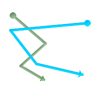
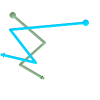
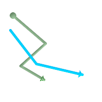
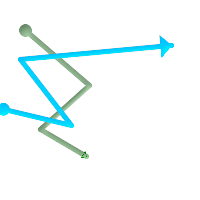

ST_LineCrossingDirection — 二つのラインストリングがどのように交差しているかを示す数字を返します。
integer ST_LineCrossingDirection(geometry linestringA, geometry linestringB);
二つのラインストリングを与えると、-3から3までの整数が返ります。この整数は、どのようにクロスしているかを示すもので、0は交差無しを意味します。この関数はLINESTRINGにのみ対応しています。
交差の番号は次の通りです。
0: クロスが無い
-1: 左クロス
1: 右クロス
-2: 複数クロスで最後が左
2: 複数クロスで最後が右
-3: 複数クロスで開始終了ともに左
3: 複数クロスで開始終了ともに右
Availability: 1.4
 ライン1 (緑)とライン2 (青)、円が始点、三角が終点。クエリは次の通り。
SELECT ST_LineCrossingDirection(foo.line1, foo.line2) As l1_cross_l2 ,
ST_LineCrossingDirection(foo.line2, foo.line1) As l2_cross_l1
FROM (
SELECT
ST_GeomFromText('LINESTRING(25 169,89 114,40 70,86 43)') As line1,
ST_GeomFromText('LINESTRING(171 154,20 140,71 74,161 53)') As line2
) As foo;
l1_cross_l2 | l2_cross_l1
-------------+-------------
3 | -3
|
 ライン1 (緑)とライン2 (青)、円が始点、三角が終点。クエリは次の通り。
SELECT ST_LineCrossingDirection(foo.line1, foo.line2) As l1_cross_l2 ,
ST_LineCrossingDirection(foo.line2, foo.line1) As l2_cross_l1
FROM (
SELECT
ST_GeomFromText('LINESTRING(25 169,89 114,40 70,86 43)') As line1,
ST_GeomFromText('LINESTRING (171 154, 20 140, 71 74, 2.99 90.16)') As line2
) As foo;
l1_cross_l2 | l2_cross_l1
-------------+-------------
2 | -2
|
 ライン1 (緑)とライン2 (青)、円が始点、三角が終点。クエリは次の通り。
SELECT
ST_LineCrossingDirection(foo.line1, foo.line2) As l1_cross_l2 ,
ST_LineCrossingDirection(foo.line2, foo.line1) As l2_cross_l1
FROM (
SELECT
ST_GeomFromText('LINESTRING(25 169,89 114,40 70,86 43)') As line1,
ST_GeomFromText('LINESTRING (20 140, 71 74, 161 53)') As line2
) As foo;
l1_cross_l2 | l2_cross_l1
-------------+-------------
-1 | 1
|
 ライン1 (緑)とライン2 (青)、円が始点、三角が終点。クエリは次の通り。
SELECT ST_LineCrossingDirection(foo.line1, foo.line2) As l1_cross_l2 ,
ST_LineCrossingDirection(foo.line2, foo.line1) As l2_cross_l1
FROM (SELECT
ST_GeomFromText('LINESTRING(25 169,89 114,40 70,86 43)') As line1,
ST_GeomFromText('LINESTRING(2.99 90.16,71 74,20 140,171 154)') As line2
) As foo;
l1_cross_l2 | l2_cross_l1
-------------+-------------
-2 | 2
|
SELECT s1.gid, s2.gid, ST_LineCrossingDirection(s1.the_geom, s2.the_geom)
FROM streets s1 CROSS JOIN streets s2 ON (s1.gid != s2.gid AND s1.the_geom && s2.the_geom )
WHERE ST_CrossingDirection(s1.the_geom, s2.the_geom)
> 0;